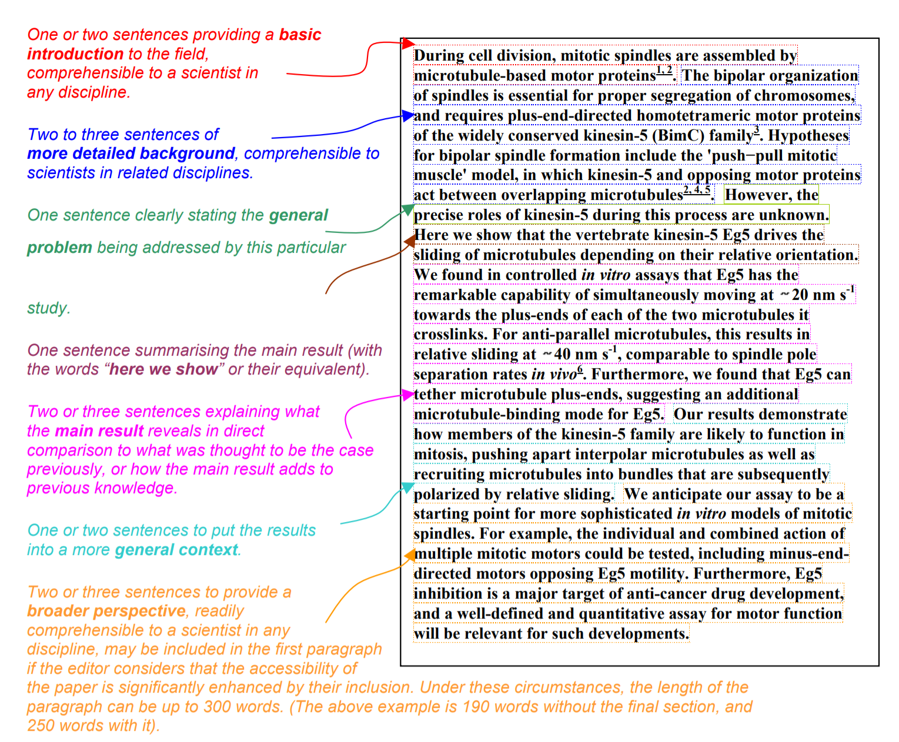
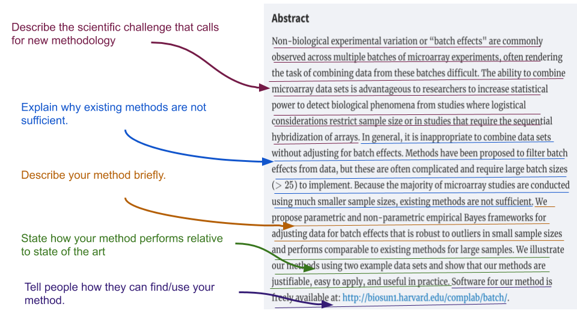
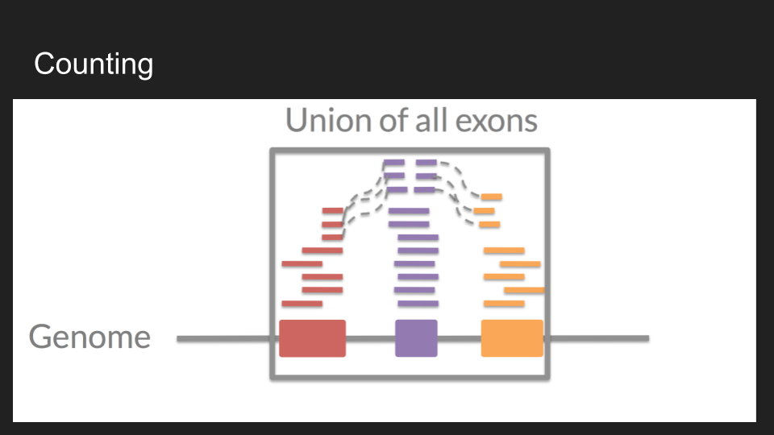
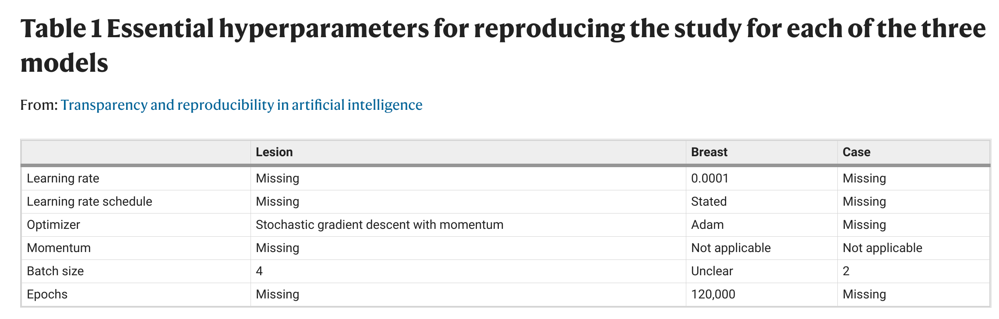

12 Week 11
12.1 Week 11 Learning objectives
At the end of this lesson you will be able to:
- Identify the differences between a methodological and data analysis paper
- Structure and write the sections of methodological papers
- Understand the role and importance of simulation in methodological work
- Be able to perform appropriate comparisons to previous methodology
12.2 Methodology vs Data Analysis
This course is primarily focused on performing and communicating data analysis. But it is also incredibly common for a data scientist to be called on to create new techniques or methodologies to answer important scientific questions. Just as there is an accepted structure for communicating a data analysis, there is also standard structure for communicating a new technique or methodology.
Before we go into this standard structure it is a good idea to describe what we mean by a new “methodology”. In (bio)statistics methodology often involves the development of a new mathematical model. As Leo Breiman puts it in his classic paper Statistical Modeling: The Two Cultures
There are two cultures in the use of statistical modeling to reach conclusions from data. One assumes that the data are generated by a given stochastic data model. The other uses algorithmic models and treats the data mechanism as unknown. The statistical community has been committed to the almost exclusive use of data models. This commitment has led to irrelevant theory, questionable conclusions, and has kept statisticians from working on a large range of interesting current problems. Algorithmic modeling, both in theory and practice, has developed rapidly in fields outside statistics. It can be used both on large complex data sets and as a more accurate and informative alternative to data modeling on smaller data sets. If our goal as a field is to use data to solve problems, then we need to move away from exclusive dependence on data models and adopt a more diverse set of tools.
In data science we sometimes develop new mathematical models, but often data science methodological development involves a variety of other kinds of methodological development. Common examples could be:
- Putting together a collection of mathematical models in a specific order
- Developing a piece of software that does a specific kind of data processing
- Creating a new workflow for analyzing a generic data type
- Creating or applying a new class of machine learning models
- Identifying a new way to repurpose existing data to answer new questions
With traditional statistical development, we can rely on purely mathematical arguments about optimality. One challenge of the broader definition of methodological development is that it can be harder to know what makes a method “good”. In this context the comparison and evaluation will largely be empirical and will need to follow the same best practices as any thoughtful data analysis.
However the purpose of a methodological paper or report is very different than a standard data analysis. The primary difference is that the scientific question you are trying to answer is about how well the proposed method will behave in a variety of contexts. Direct answers to a scientific question may be a piece of that puzzle, but they are not sufficient by themselves to know that a method works or is good.
12.3 The sections of a methodological paper
As we discussed in week 9; a scientific paper can be distilled into four parts:
- A set of methodologies
- A description of data
- A set of results
- A set of claims
When you (or anyone else) writes a paper the goal is to communicate clearly items 1-3 so that they can justify the set of claims you are making. Before you can even write down 4 you have to do 1-3. So that is where you start when writing a paper.
Good methodological papers have the following characteristics:
- States the scientific problem the method is trying to solve at the beginning of the abstract and introduction.
- Describes a recent and relevant data set where this scientific problem occurs. Describes a method, justifying decisions based on how they are connected to the scientific problem
- Performs a thorough comparison to the best methods available through simulation or data examples. We don’t expect authors to implement other people’s methods in software just to compare them, but we would like to see some comparison to the best methods that have software available.
- Explains the metrics for comparison and why the comparison shows the proposed method represents a practical advance.
- Applies the method to the example data set and explains the solution to the problem.
- Includes well-documented scripts and data that perform the analyses presented in the paper.
12.3.1 Abstracts
Recall the generic structure for an abstract from Nature:

You can use this similar structure with a few modifications:

Here I have annotated the abstract of a highly-regarded paper from the journal Biostatistics. The key components of the abtract are:
- Background: Here you should discuss the broad scientific field and methodological challenges.
- Specific problem: Here you should provide a discussion of what other methods exist and why there is still a need for a new method.
- Brief description: Here you should describe the method you have developed briefly.
- Comparison Results: Here you should describe how your method performs relative to the state of the art.
- Method sharing: Here you should describe how others can get access to your work - typically in the form of a piece of software
12.3.2 Introductions
An introduction should be a more lengthy (1-3 pages) explanation of the scientific problem motivating your methodology, why there is still a need for methodological development and people should care, how your method works, and a comparison to the state of the art. Always start with the big picture! Provide the audience with enough background that they understand why you are tackling this problem and what others have done.
Another important structural element is that introductions should go from general to specific. So you should start by putting the idea in its general context, e.g. “we need methods to help us address confounding in genomics experiments” and then narrow down to the problem you are addressing specifically, e.g. “we need methods to correct for batch effects”.
One device you can use in the introduction or the beginning of the methods section is to create a simple simulated, or fake, example where the problem is illustrated more clearly than it would be in real data. Brad Efron is an example of a statistician who often uses this technique very effectively. It helps to orient the reader before you launch into more complicated statistical or computational ideas.
You should also briefly review what other people have done in the area. The most critical thing is never underestimate how little people know or care about what you are working on. It is your job to explain to them why they should.
12.3.3 Description of your method
One of the biggest differences with a standard data analytic paper is that the methods are the results in a methodological paper. So most methodological journals and reports will flip the order of methods and results, putting the methods first.
When describing your method you should remember that the audience needs to know three things:
What goes in to your method: Do you start with the raw data from the sensing equipment? A set of tidy data that have already been organized? JSON data from an API?
What does your method do to the data: Here you want to describe in precise detail how your method works using equations, psuedocode, or a very precise plain language description.
What does your method produce: Do you get predictions? Estimates? Confidence intervals? For data processing pipelines - what does the data look like when it leaves your workflow or pipeline?
Mathematical language is often used for statistical or machine learning methods. There is a temptation to be overly complicated with your notation - this temptation may be reinforced by reviewers looking for novelty and your own struggles with how to make a complicated method easy to understand. Resist this temptation at all costs! To make sure your method is understandable:
- Reduce the number of parameters in your model when possible
- Use parameter values that are common to your field or easy to follow (don’t use \(\alpha\) for type II errors, don’t use \(\beta\) for error terms)
- Explain every parameter that appears in an equation in plain language directly following the equation
- Minimize the use of subscripts and superscripts wherever possible
You may also be describing a workflow or a set of computational steps that a user must perform. You migtht be doing nothing more than combining a set of previously developed software in a particular order, or applying software from a new field to your area of application. When describing software steps you will often use pseudocode which outline the steps that are being performed. The difficult tradeoff with pseudocode is between simplicity and ensuring that all steps are concretely documented. Regardless, if you are describing software or workflows, then you should ensure your code is made available.
12.3.4 Simulation results
A key component of methodological papers is simulation results. Simulated data is “made up data” that you control completely. Simulation is commonly used by statisticians/data analysts to: (1) estimate variability/improve predictors, (2) to evaluate the space of potential outcomes, and (3) to evaluate the properties of new algorithms or procedures. It can be really useful for understanding when a method works and doesn’t work. Simulated data can come in different flavors like:
- Fully parametric and made up * You simply simulate from known distributions
- Parametric but modeling real data characteristics - You may model certain characteristics in real data - Then use those model fits to generate data from known distributions
- Non-parametric - resampling real data - You take a real data set - You sample from that data set and dadd “signal”
- Non-parametric - just real data - You use real data where some set of controls lets you control the signal - It is often the most realistic, but can be hard to know the “right answer”
As an example, I often work with data from RNA-sequencing experiments. One of the things we often do is count the number of “reads” that correspond to a particular gene:

You could simulate this data
- Fully parametric and made up - By simulating from a negative binomial distribution
- Parametric but modeling real data characteristics - By modeling characteristics of the sequencing machine, then simulating from a negative binomial distribution
- Non-parametric - resampling real data - By resampling from different groups of samples and genes to create signal
- Non-parametric - just real data - By sampling data from only Y or X chromosomes and making comparisons across males and females
Regardless, the goals of these simulations are to show how your methods will behave. Some statisticians, particularly applied statisticians, aren’t fond of simulation for evaluating methods. One reason is that you can always simulate a situation that meets all of your assumptions and make your approach look good. Real data rarely conform to model assumptions and so are harder to “trick”. On the other hand, I really like simulation, it can reveal a lot about how and when a method will work well and it allows you to explore scenarios - particularly for new or difficult to obtain data.
The best papers consider at least the “extremes”:
- Simulation where the assumptions are true There are a surprising number of proposed methods/analysis procedures/analyses that fail or perform poorly even when the model assumptions hold. This could be because the methods overfit, have a bug, are computationally unstable, are on the wrong place on the bias/variance tradeoff curve, etc. etc. etc. I always do at least one simulation for every method where the answer should be easy to get, because I know if I don’t get the right answer, it is back to the drawing board.
- Simulation where things should definitely fail I like to try out a few realistic scenarios where I’m pretty sure my model assumptions won’t hold and the method should fail. This kind of simulation is good for two reasons: (1) sometimes I’m pleasantly surprised and the model will hold up and (2) (the more common scenario) I can find out where the model assumption boundaries are so that I can give concrete guidance to users about when/where the method will work and when/where it will fail.
The first type of simulation is easy to come up with - generally you can just simulate from the model. The second type is much harder. You have to creatively think about reasonable ways that your model can fail. I’ve found that using real data for simulations can be the best way to start coming up with ideas to try - but I usually find that it is worth building on those ideas to imagine even more extreme circumstances. Playing the evil demon for my own methods often leads me to new ideas/improvements I hadn’t thought of before. It also helps me to evaluate the work of other people - since I’ve tried to explore the contexts where methods likely fail.
In any case, simulation sections are most believable when they show both where a method is likely to work and where it is likely to fail.
12.3.5 Empirical results
Most methodological papers will also include results on actual empirical data in addition to simulation. Typically, we won’t know the “right” answer on these data so the analysis is typically done for illustration purposes. Though in some cases, there will be a data set that is designed specifically for evaluation purposes, with signal “spiked in” so that one can determine if the method is able to capture it.
Empirical results sections are often shorter in methodological papers but are critically important. They show that the method works out in the wild, without the simplification of simulation. A good empirical results section:
- Describes the data and why they pose the specific challenge your method is trying to address
- Describes how the method was applied in detail including any tuning parameters that you may need to set to get the method to work
- Describes the results, especially in comparison to the state of the art.
12.3.6 Conclusions and discussion
Remember “tell them what you are going to tell them, tell them, then tell them what you told them”. In your introduction you explained what you were going to tell your audience, in the methods and results you told them, and in the conclusions and discussion you should start with a summary of what you told them. It is then a good idea to highlight potential limitations of your methods and to provide a fair assessment of how they perform relative to others. Be honest! It builds trust when a methods paper highlights potential issues for you, so that you don’t have to discover them yourself.
After you have explained the limitations you can conclude with the strengths of your method and the potential next steps for your audience - often with a reminder to where they can find your tool or software.
12.4 Comparisons
In some very rare cases, you will propose a method to address a problem that no one has ever thought of before. But the majority of the time, you will need to compare your method to existing software, tools, workflows, or statistical models. A common criteria used to evaluate methodds is how well they stack up against the “state of the art”. The most sophisticated methodological journals, like Genome Biology, make it an explicit requirement for publication:
Method articles should describe novel methods that are shown to be a clear advance over existing state-of-the-art methods in a side-by-side demonstration, where possible.
For computational methods, demonstration of superiority should be carried out using the same dataset. Where possible, the method should be benchmarked using a synthetic dataset (or other dataset where the ground truth is known), and its utility on real data demonstrated. A Method article need not necessarily provide novel biological insights, but these can help to demonstrate the method’s utility.
One of the most obvious “failure modes” for methological papers is the lack of a sufficiently robust comparison to existing methodology. These comparisons involve both a literature review - to discover your potential competitors - and a simulation or empirical study - where you apply your method and the other methods to the same data. A good comparison does both of these steps well.
One of the challenges you may run into is that competitor methods may not have software available. In this case, a fair comparison is simply to state that software for that method does not exist. You aren’t expected to create software for competivive methods.
12.5 Transparency
Data science methods can often have major implications financially, medically, culturally, and ethically. It is therefore critical that we can evaluate these methods in as complete a manner as possible. When developing a method, it is critical that you provide the code and data from your work for others to test and build on.
Recently a group from Google proposed an artificial intelligence approach for diagnosing breast cancer from mammography screens they claimed was superior to clinical judgement:

However, a number of the details behind this approach where not made available:

But as we have seen previously this kind of thing can go seriously wrong. The details must be available to make a method really understandable, useable, and scientific. As we put it in a response:
Scientific progress depends on the ability of independent researchers to scrutinize the results of a research study, to reproduce the study’s main results using its materials, and to build on them in future studies (https://www.nature.com/nature-research/editorial-policies/reporting-standards). Publication of insufficiently documented research does not meet the core requirements underlying scientific discovery2,3. Merely textual descriptions of deep-learning models can hide their high level of complexity. Nuances in the computer code may have marked effects on the training and evaluation of results4, potentially leading to unintended consequences5. Therefore, transparency in the form of the actual computer code used to train a model and arrive at its final set of parameters is essential for research reproducibility.
To be transparent, you should at minimum include the code you used in your analysis, all simulated data, and a way to request access to empirical data.
12.6 Software
Incentives in academia lean heavily toward producing papers and less toward producing and maintaining software. However, to really make your methodological contribution useful for others you will need to wrap it into user friendly software that is well documented.
But there are some real reasons to write software as a data scientist that are critically important:
- You probably got into data science to have an impact. One of the most direct and quantifiable ways to have an impact on the world is to write software that other scientists, educators, and data scientists use. If you write a data science method paper with no software the chance of impacting the world is dramatically reduced.
- Software is the new publication. I couldn’t name one paper written by a graduate student (other than mine) in the last 2-3 years. But I could tell you about tons of software packages written by students/postdocs (both mine and at other places) that I use. It is the number one way to get your name out there in the data science community.
- If you write a software package you need for yourself, you will save yourself tons of time in sourcing scripts, and remembering where all your code/functions are. Most importantly might be that creating an R package is building something. It is something you can point to and say, “I made that”. Leaving aside all the tangible benefits to your career, the profession, etc. it is maybe the most gratifying feeling you get when working on research.
If you write in R, there are a number of good guides for creating R packages. In Jeff’s research group they use this guide. One thing to keep in mind is that even if your code is a bit messy or hard to use, it can often be rescued with good documentation:
12.7 Additional Resources
12.8 Homework
- Template Repo: https://github.com/advdatasci/homework11
- Repo Name: homework11-ind-yourgithubusername
- Pull Date: 2020/11/16 9:00AM Baltimore Time